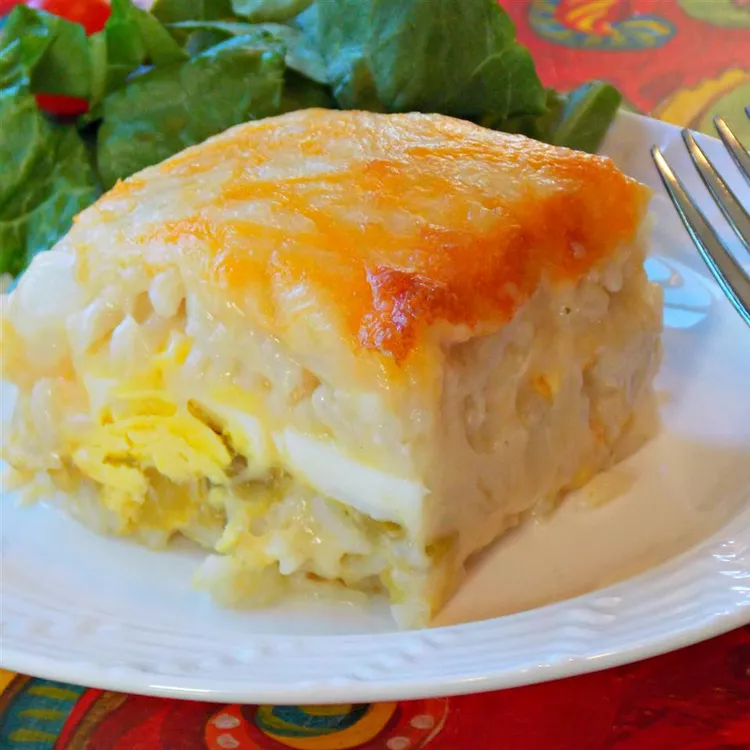

HOME
Brunch Casserole

Ingredients :
- ½ cup butter
- 2 (13 ounce) packages frozen cheese-filled blintzes
- 6 egg whites
- 6 egg yolks
- 2 cups sour cream
- ⅓ cup white sugar
- 1 teaspoon vanilla extract
- ½ teaspoon salt
Steps :
- PPreheat oven to 350 degrees F (175 degrees C).
- Place the butter in 9x13 inch baking dish, and put into the oven until melted, about 3
minutes. Place the blintzes into the baking dish in a single layer on top of the melted butter.
- Whip the egg whites in a bowl until they form soft peaks, about 5 minutes, and set aside.
- Whisk together the egg yolks, sour cream, sugar, vanilla extract, and salt in a large bowl
until smooth. Use a rubber spatula or wire whisk to fold 1/3 of the whipped egg whites into the sour cream
mixture. Gently run the spatula through the center of the bowl, then around the sides of the bowl, repeating
until fully incorporated. Add the remaining whipped egg whites, folding just until incorporated. Pour the
mixture over the blintzes in the baking dish.
- Bake in the preheated oven until the eggs are set and puffy and the top is golden brown, about 45 minutes.